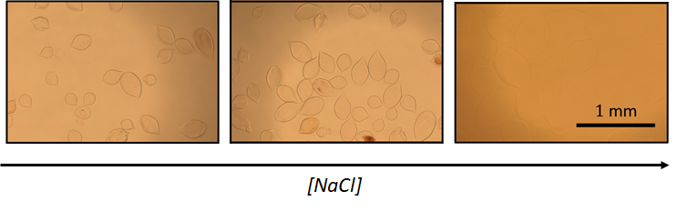

Alginate Gels
Caleb Anderson
We study alginate, a widely used, charged, and biocompatible gel held together by ionic crosslinks intermediated by divalent cations. The physics that results from ionic crosslinks is rich. As just one example, the addition of salt to a solution containing charged gels with traditional covalent crosslinks tends to de-swell traditional gels. However, the addition of monovalent salts can reduce the number of crosslinks in an alginate gel and entropic effects can outcompete the drop in osmotic pressure to swell the alginate. We study the material properties, jamming, sedimentation, and swelling of alginate capsules.
